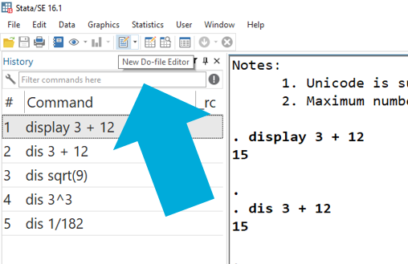
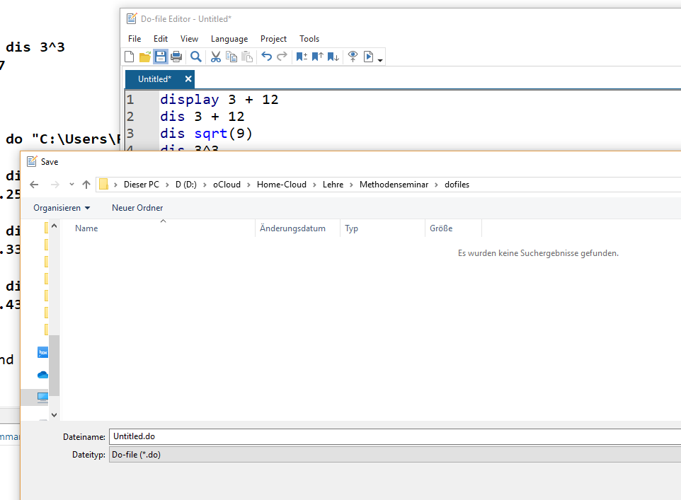

1 Einstieg in Stata
Hier sehen wir die Startansicht von Stata:
Figure 1.1: Startansicht Stata16
Die Standardansicht von Stata besteht aus mehreren Fenstern:
- Kommandos/Befehle
- Ergebnisse
- Variablenübersicht
- Übersicht zu den geladenen Daten
- Befehlshistorie
1.1 Taschenrechner
In das Befehlsfeld (1) können wir Kommandos eingeben, z.B. eine Berechnung durchführen. Dazu geben wir zunächst den Befehl display und dann die gewünschte Rechnung ein und drücken dann Enter. Der Befehl wird dann im Ergebnisfenster gespiegelt und darunter das Ergebnis ausgegeben:

Wir können display auch mit dis abkürzen.
1.2 Darstellung in diesem Skript
Eingaben und Ergebnisse werden im weiteren Skript so dargestellt:
1531.3 DoFile Editor
Zwar funktioniert die direkte Eingabe in das Befehlsfeld, allerdings werden wir im Laufe dieser Woche sehr viel längere und komplexere Befehle kennenlernen. Für solche Anwendungen werden in Stata sog. DoFiles angelegt. Darin können Befehle entworfen und für eine spätere Verwendung abgespeichert werden. Um ein DoFile zu öffnen geben wir entweder doedit in das Befehlsfeld ein oder klicken auf das Feld “New Do-file-Editor” rechts oben:

Es öffnet sich ein neues Fenster:

In diesem sog. Do-File-Editor können wir Befehle entwerfen. Wenn wir diese dann durchführen möchten, markieren wir die entsprechenden Zeilen und drücken STRG + D. Die ausgeführten Befehle werden wieder im Ergebnisfenster gespiegelt und jeweils darunter die Ergebnisse angezeigt:
Das DoFile können wir speichern, um es später wieder aufzurufen. Wichtig ist dabei, der gespeicherten Datei die Endung “.do” zu geben, also zum Beispiel “01_Montag.do”. Diese DoFiles können dann einfach ausgetauscht werden, um später daran weiter zu arbeiten oder Analysen für Dritte nachvollziehbar zu machen. 
1.4 Datensätze laden
Das ist aber alles soweit sehr unspektulär - es gibt schönere und günstigere Taschenrechner als Stata. Die eigentliche Stärke von Stata ist die Analyse von Datensätzen. Diese müssen zunächst eingelesen werden. Im einfachsten Fall liegen die Daten als Stata-Datensatz (mit der Endung .dta) vor und wir können die Daten wie folgt einlesen:
Der Einlesevorgang besteht also aus zwei Befehlen: zuerst geben wir cd den Pfad an, unter welchem der einzulesende Datensatz zu finden ist. Natürlich hängt der Dateipfad aber ganz davon ab, wo Sie den Datensatz gespeichert haben, hier ist es “C:/Users/Andreas/Dokumente/Statistik/”:
 Um den Pfad des Ordners herauszufinden, klicken Sie bei Windows in die obere Adresszeile im Explorerfenster:
Um den Pfad des Ordners herauszufinden, klicken Sie bei Windows in die obere Adresszeile im Explorerfenster:

In iOS (Mac) finden Sie den Pfad indem Sie einmal mit der rechten Maustaste auf die Datei und unter Informationen den Reiter “Ort” wählen.
Wir haben zwei Möglichkeiten zu das aktuelle Arbeitsverzeichnis überprüfen: wir sehen das aktuelle Arbeitsverzeichnis im Stata-Fenster links unten oder wir geben pwd ein:

Wir können diese beiden Schritte natürlich auch einfach kombinieren und den gesamten Pfad nach use angeben:
Wenn das funktioniert hat, dann sehen wir im Fenster rechts eine Variablenübersicht:
 In dieser Variablenübersicht können mit Hilfe des Suchfelds (oranger Kreis) auch nach Variablen suchen:
In dieser Variablenübersicht können mit Hilfe des Suchfelds (oranger Kreis) auch nach Variablen suchen:
1.5 Überblicksbefehle
Mit describe, short bekommen wir einen Überblick zu den eingelesenen Daten:
(ALLBUS 2018)
Contains data from D:\oCloud\Home-Cloud\Lehre\Methodenseminar\ZA5270_v2-0-0.dta
obs: 3,477 ALLBUS 2018
vars: 708 28 Mar 2019 16:09
size: 3,431,799
Sorted by: Hier wurde also ein Datensatz geladen, welcher 3477 Fälle/Zeilen (obs) und 708 Variablen/Spalten (vars) enthält.
(Wir können den Befehl auch als d,s abkürzen)
Mit browse bekommen wir eine Übersicht des Datensatzes:

Wenn wir nur einige Variablen betrachten möchten, hängen wir diese einfach browse an:

Wir können den describe Befehl auch nutzen, um Informationen zu einer Variable zu erhalten. Dazu hängen wir einfach eine oder mehrere Variablen an describe an:
(ALLBUS 2018)
storage display value
variable name type format label variable label
--------------------------------------------------------------------------------------------------------------------------------------------------------------------------------------------------------
pv01 byte %12.0g pv01 BEFR.: WAHLABSICHT BUNDESTAGSWAHLWir können dabei describe mit d abkürzen:
(ALLBUS 2018)
storage display value
variable name type format label variable label
--------------------------------------------------------------------------------------------------------------------------------------------------------------------------------------------------------
pv01 byte %12.0g pv01 BEFR.: WAHLABSICHT BUNDESTAGSWAHL
age byte %12.0g age ALTER: BEFRAGTE(R)
sex byte %12.0g sex GESCHLECHT, BEFRAGTE(R)Wenn wir einen neuen Datensatz aus dem Speicher löschen wollen, dann können wir dies mit clear.
1.6 Übungen
Führen Sie folgende (oder beliebige andere) Taschenrechneraufgaben mit Stata durch:
- 2 * 4
- 2 / 8
- 2 ^ sqrt(4) + 5
Laden Sie die Datensätze aus ILIAS herunter!
Wechseln Sie mit Hilfe des cd Befehls das Arbeitsverzeichnis!
- In welchem Arbeitsverzeichnis befinden Sie sich aktuell?
- In welchem Ordner haben Sie die Datensätze aus ILIAS abgelegt?
- Navigieren Sie Stata mit
cdin eben diesen Ordner, in dem die Datensätze abgelegt sind!
Lesen Sie den Allbus 2018 in Stata ein.
- Sie finden den Allbus 2018 in ILIAS.
- Wie viele Fälle hat der Datensatz?
- Unter welchem Variablennamen ist der Familienstand der Befragten ablegt?
- Wie viele Variablen und wie viele Fälle enthält der Datensatz?
- Öffnen Sie das Überblicksfenster!
- Unter welchem Variablennamen ist die Information abgelegt, in welchem Bundesland die Befragten wohnen?